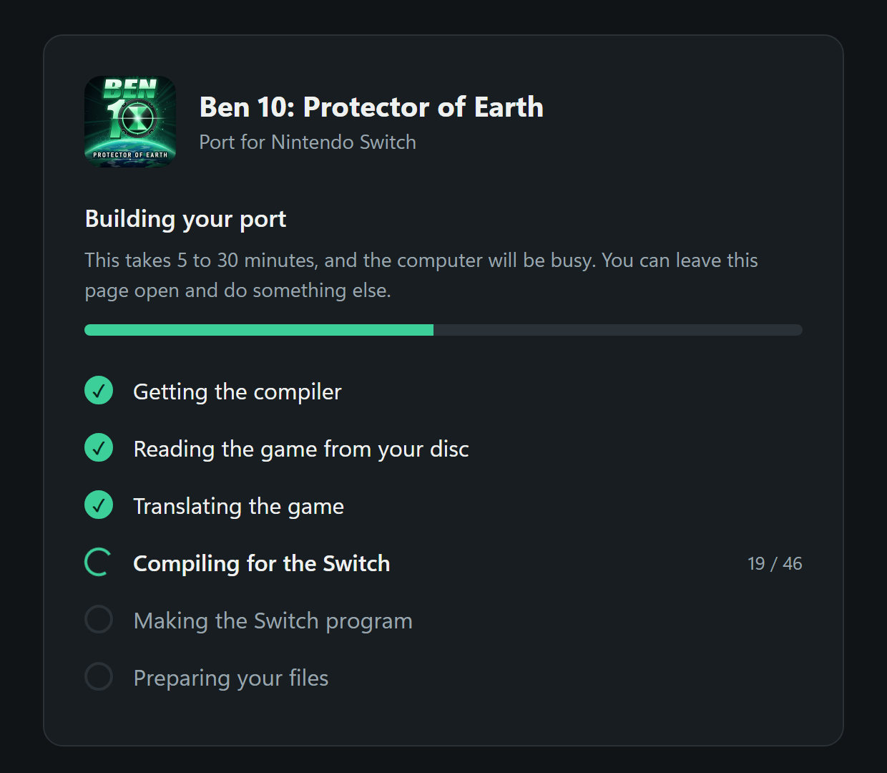
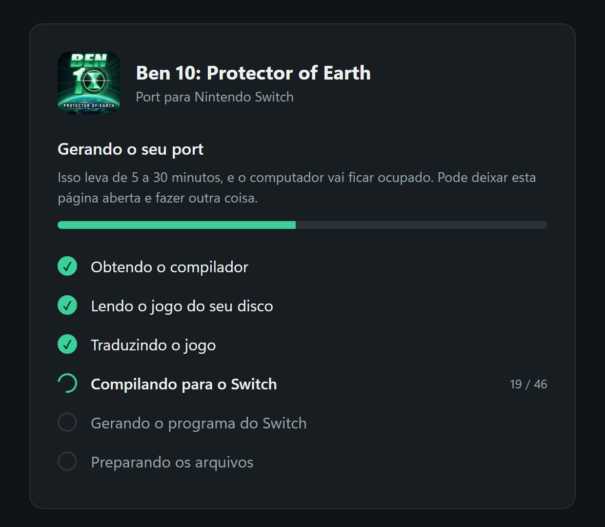

Ben 10: Protector of Earth on your Nintendo SwitchBen 10: Protector of Earth no seu Nintendo Switch
A native, open source port of the PSP game, at about 30 FPS and twice the original resolution. You need the game's .iso file: the installer uses it to build the port on your PC and copy it to your SD card.
Um port nativo e de código aberto do jogo de PSP, a cerca de 30 FPS e no dobro da resolução original. Você precisa do arquivo .iso do jogo: o instalador usa esse arquivo para gerar o port no seu PC e copiar para o cartão SD.
Download for WindowsBaixar para Windows Windows 10 or 11 · 27 MB · version 1.1.2Windows 10 ou 11 · 27 MB · versão 1.1.2Three stepsTrês passos
No command line, and nothing else to install.
Sem linha de comando e sem mais nada para instalar.
- Download the installer
Right-click the ZIP, choose Extract All, and open
Install Ben 10in the extracted folder. If Windows warns you, click More info, then Run anyway. - Choose the game file
A page opens in your browser. Click Choose the .iso file, select Ben 10 for PSP, American version (code
ULUS10307), and click Build the port. It takes 5 to 30 minutes. - Copy and play
Put the Switch's SD card in your PC and click it on the page. Then, on the Switch, hold R while starting any installed game and choose Ben 10.
- Baixe o instalador
Clique com o botão direito no ZIP, escolha Extrair tudo e abra o
Install Ben 10na pasta extraída. Se o Windows avisar, clique em Mais informações e em Executar assim mesmo. - Escolha o arquivo do jogo
Uma página abre no navegador. Clique em Escolher o arquivo .iso, selecione o Ben 10 de PSP, versão americana (código
ULUS10307), e clique em Gerar o port. Leva de 5 a 30 minutos. - Copie e jogue
Coloque o cartão SD do Switch no PC e clique nele na página. Depois, no Switch, segure R ao abrir qualquer jogo instalado e escolha Ben 10.
What it does on your PCO que ele faz no seu PC
The installer's page runs only on your computer, which is why its address starts with 127.0.0.1. To share the port, send people the link to this site.
A página do instalador roda só no seu computador, por isso o endereço começa com 127.0.0.1. Para divulgar o port, envie o link deste site.
- Checks your disc. It stops on any copy other than the supported one.
- Downloads a compiler. Arm's free GNU Toolchain, about 170 MB, from Arm's website, checked by SHA-256.
- Builds the port. It translates the game's program to C and compiles that for the Switch.
- Cleans up. The compiler and temporary files are deleted, and your saves on the card are never touched.
- Confere o disco. Ele para em qualquer cópia diferente da suportada.
- Baixa um compilador. O GNU Toolchain gratuito da Arm, com cerca de 170 MB, do site da Arm, conferido por SHA-256.
- Gera o port. Ele traduz o programa do jogo para C e compila para o Switch.
- Limpa tudo. O compilador e os arquivos temporários são apagados, e os saves no cartão nunca são tocados.


How it runsComo ele roda
It isn't an emulator. The game's code is compiled to run directly on the Switch, and a new renderer draws it with the console's own graphics API.
Não é um emulador. O código do jogo é compilado para rodar direto no Switch, e um novo renderizador desenha tudo com a API gráfica do próprio console.
- ~30 FPS
- in handheld, with short dips in the heaviest scenes
- no portátil, com quedas curtas nas cenas mais pesadas
- 2×
- the PSP's resolution
- a resolução do PSP
- Saves
- Saves
- and HOME, powering off and on all work
- HOME, desligar e ligar também funcionam
Why beta: docked 1080p has not been verified yet, and only part of the game has been played on this build. If something goes wrong, please report it.
Por que beta: o 1080p no dock ainda não foi verificado, e só parte do jogo foi jogada nesta versão. Se algo der errado, por favor relate.
QuestionsDúvidas
What do I need?O que eu preciso ter?
A Switch running Atmosphère with the Homebrew Menu; the .iso file of your own copy of the game, American version (code ULUS10307), which this project does not provide; and a Windows 10 or 11 PC with about 4 GB free and internet access.
Um Switch com Atmosphère e o menu de homebrew; o arquivo .iso da sua própria cópia do jogo, versão americana (código ULUS10307), que este projeto não fornece; e um PC com Windows 10 ou 11, cerca de 4 GB livres e internet.
Why isn't there a ready-made file to download?Por que não há um arquivo pronto para baixar?
The finished program contains code translated from the game, so it isn't published. The installer makes it on your PC, only from your copy. Please don't share what it builds.
O programa pronto contém código traduzido do jogo, então ele não é publicado. O instalador o gera no seu PC, só a partir da sua cópia. Por favor, não compartilhe o resultado.
Windows warned me about the program. Is it safe?O Windows avisou sobre o programa. É seguro?
The installer is new and has no paid signature, so SmartScreen may warn about it: "More info", then "Run anyway" continues. You can read all of its source first, and compare your download with the SHA-256 below. A "virus detected" message is different: don't turn off your antivirus, and please report it.
O instalador é novo e não tem assinatura paga, então o SmartScreen pode avisar: "Mais informações" e depois "Executar assim mesmo" continua. Você pode ler todo o código dele antes e comparar o download com o SHA-256 abaixo. Uma mensagem de "vírus detectado" é diferente: não desative o antivírus e relate o caso.
What goes on my SD card?O que vai para o cartão SD?
One folder, switch/ben10-psp/, with the port, a copy of your disc image and its data. You need about 1 GB free. Your saves stay in memstick/ in that folder, and installing again keeps them.
Uma pasta, switch/ben10-psp/, com o port, uma cópia da imagem do seu disco e os dados dele. É preciso ter cerca de 1 GB livre. Seus saves ficam em memstick/ nessa pasta, e instalar de novo os mantém.
What are the controls?Quais são os controles?
The face buttons match the PSP by position: A is Circle, B is Cross, X is Triangle, Y is Square. L or ZL is L, R or ZR is R, + is Start and − is Select. Press + and − together to quit.
Os botões seguem a posição do PSP: A é Círculo, B é Xis, X é Triângulo, Y é Quadrado. L ou ZL é L, R ou ZR é R, + é Start e − é Select. Aperte + e − juntos para sair.